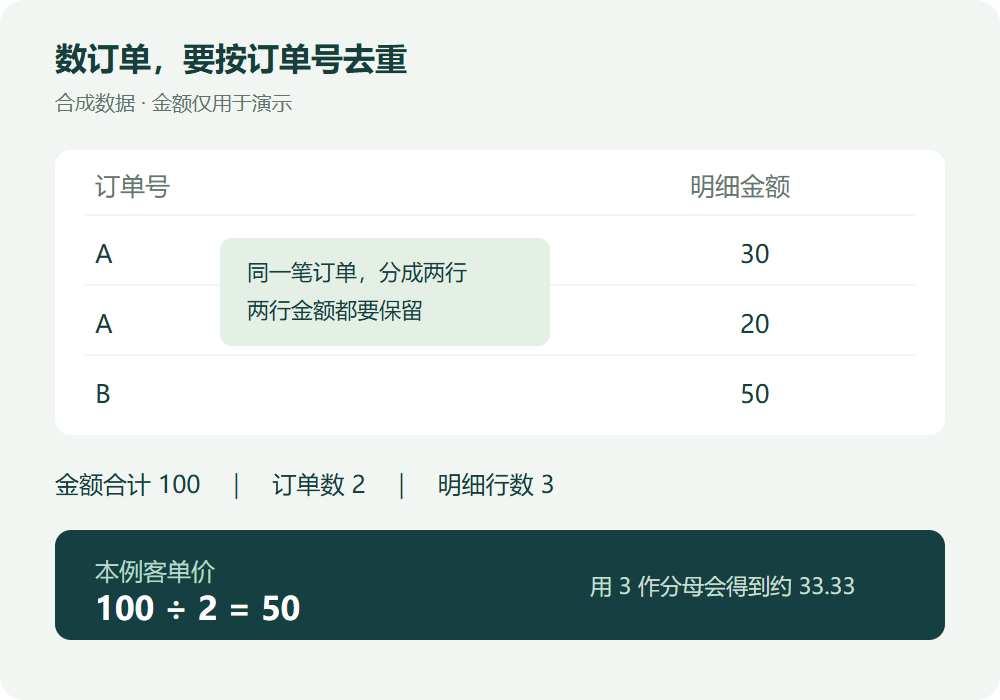

3 行明细，为什么只有 2 笔订单？
让 AI 帮你算客单价之前，先看清表里的一行代表什么。
订单表有 3 行，客单价就用总金额除以 3 吗？如果同一笔订单买了两件商品，导出的明细可能拆成两行。分母用错，后面的计算再整齐也没用。
把三行数据摆出来
这里用一份合成数据演示。订单 A 的两条明细分别是 30 和 20，订单 B 的一条明细是 50。
三行金额相加是 100。订单号去重后是 A、B 两个，所以本例的客单价是 100 ÷ 2 = 50。若直接除以 3 行，结果就会变成约 33.33。

注意，A 的两行都要计入金额。去重的是用于计数的订单号，不能把第二条商品明细连同金额一起删掉。
先把计算要求说清楚
交给 AI 时，可以先提出这组要求。
这是一份合成订单明细表。同一订单可能有多行，每行金额只代表该条明细。请汇总明细金额，按订单号去重计数，再计算客单价，并列出计算过程。缺少必要信息时，先指出缺口。
拿到结果后，对照原表检查两件事。金额是否仍是 100，订单数是否是 2。两项都对上，再看最后的除法。
用在真实数据前，再补一步
本例没有退款、取消订单和跨币种情况。换成实际业务数据时，需要先约定金额与订单数的统计范围，并检查是否重复导入。这里的算式只适用于当前演示口径。
先核对订单数，再解释计算结果。